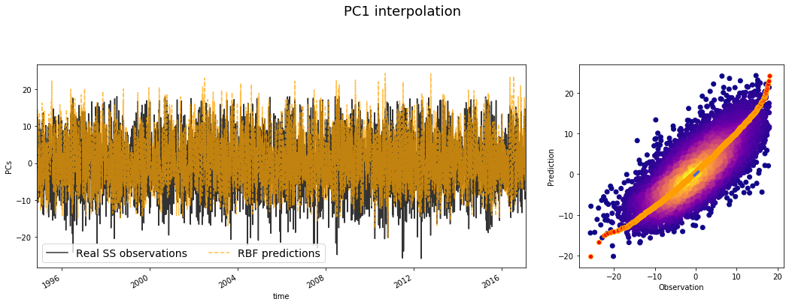
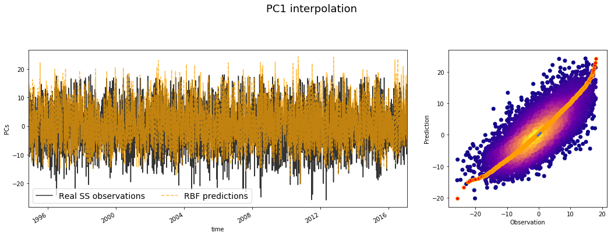

7. MDA - RBF model¶
In this notebook, we will perform a analysis using one of our most used methods, which involves MDA + RBF algorithms. The process will be the next:
First, the areas where the study is wanted to be performed are selected.
Next, we calculate the PCs of these areas, given the hourly / daily storm surge of the locations in that area.
After calculating the Stormsurge-PCs and the SLP (local) principal components, we then choose N cases from the total dataset, using the MDA algorithm.
Finally, we use RBF to interpolate the final storm-surge surface in all the areas / locations!!
7.1. Maximum Dissimilarity Algorithm (MDA)¶
In this way, the first important step to carry out this method is the selection of the maximum dissimilar cases, so the posterior reconstruction of all the cases can be performed correctly:

Fig. 7.1 This is a sketch representation of how the MDA algorithm works¶
This sketch shows the workflow followed in the selection step. The data is firstly normalized for the correct performance of the algorithm, then the euclidean distance is used for the calculation of the distance between the different vectors in the dataset. Finally, the selected data is de-normalized so it can be used and plotted together with the original information.
As it can be seen, the variables used are:
where \(PCn\) refers to the principal components of the sea-level-pressure fields and the \(SSn\) variables belongs to the principal components of the \(n\) locations of the selected area.
7.2. Reconstruction of the coastal wave climate with RBF¶
Once we have the selected cases, we now have a lot of different situations with different characteristics all along the coast so the reconstruction of the storm surge climate can be done.
The reconstruction of the storm surge in shallow waters is carried out by an interpolation from the selected case series that have been selected. The interpolation technique used is based on radial basis functions (RBF), very suitable for data with high dimensionality and not evenly distributed. There is a series of values of the real function \(f(x_i) \:\:\: i = 1, ..., N\) in the points \(x_1 , ..., x_N\). The RBF interpolation technique considers that the RBF function approximation consists of a linear combination of symmetrical radial functions centered on the given points. The objective function has the following expression:
interpolating the given values as follows:
where \(RBF\) is the interpolation function, \(p(x)\) is the linear polynomial in all the variables involved in the problem, \(a_i\) are the RBF adjustment coefficients, \(\Phi\) is the basic radial function, \(||\cdot||\) is the Euclidean norm and \(x_i\) are the centres of the RBF interpolation.

Fig. 7.2 This is the interpolation surface of the RBF technique¶
The polynomial \(p(x)\) in the expression of the RBF interpolation function is defined as a monomial base \({p_0, p_1 ,..., p_d}\). The first is a monomial, consisting of a number of grade one monomials equal to the dimensionality of the data, where \(b = {b_0 , b_1 ,..., b_d}\) are the coefficients of these monomials.
The radially based functions can have different expressions. Some of these radial functions contain a shape parameter that plays a very important role in the precision of the technique. In the methodology of propagation of the maritime climate, it has been considered the Gaussian radial function that depend on a shape parameter.
# common
import os
# pip
import numpy as np
import pandas as pd
import xarray as xr
# plotting
import matplotlib.pyplot as plt
import cartopy.crs as ccrs
# append sscode to path
import sys
sys.path.insert(0, os.path.join(os.path.abspath(''), '..'))
# custom
from sscode.data import Loader, load_moana_hindcast_ss
from sscode.mda_rbf import MDA_RBF_Model
from sscode.plotting.validation import plot_stats
7.3. Load data and linear model stats¶
We first load the data, and plot some multilinear regression statistics to compare…
# load the data
load_cfsr_moana_uhslc = Loader(
data_to_load=['cfsr','moana','uhslc'], load_winds=True,
plot=False, time_resample='1D'
)
# load the moana v2 hindcast (more ss and mask)
ss_grid = (load_moana_hindcast_ss(daily=True) * \
xr.open_dataarray('../data/bathymetry/nz_300m_elev_mask.nc'))\
.dropna(dim='lon',how='all').dropna(dim='lat',how='all')
ss_moanav2_site = xr.Dataset(
{
'ss': (('time','site'), ss_grid.values.reshape(
-1,len(ss_grid.lon)*len(ss_grid.lat))),
'lon': (('site'), list(ss_grid.lon.values)*int(
(len(ss_grid.lon)*len(ss_grid.lat))/len(ss_grid.lon))),
'lat': (('site'), np.repeat(ss_grid.lat.values,
(len(ss_grid.lon)*len(ss_grid.lat))/len(ss_grid.lat)))
}, coords={
'site': np.arange(len(ss_grid.lon)*len(ss_grid.lat)),
'time': ss_grid.time.values
}
).dropna(dim='site',how='all')
# plot results
lm_stats = True
if lm_stats:
stats_local = xr.open_dataset(
'../data/statistics/stats_lm_local_daily.nc'
)
plot_stats(stats_local,plot_stats=['rmse','pearson','rscore'])
loading the sea-level-pressure fields...
loading daily resampled data...
loading the Moana v2 hindcast data...
loading and plotting the UHSLC tidal guages...
loading the Moana v2 hindcast data (ss)...

# dict to pca
pca_attrs_default = {
'pres_vars': ('SLP','longitude','latitude'),
'calculate_gradient': False,
'winds': (True,load_cfsr_moana_uhslc.predictor_wind),
'wind_vars': ('wind_proj_mask','lon','lat'),
'time_lapse': 2, # 1 equals to NO time delay,
'time_resample': '1D', 'region': ('local',(2.1,2.1)),
'pca_plot': (True,False,1), 'verbose': False,
'pca_ttls': ['SLP in t','SLP in t-1','Winds in t'],
'pca_borders': None
}
# construct the MDA + RBF object
mda_rbf_model = MDA_RBF_Model(
load_cfsr_moana_uhslc.predictand, # load_cfsr_moana_uhslc.predictand,
load_cfsr_moana_uhslc.predictor_slp,
pca_attrs_default, # all params to calculate the pcs
# lons=[173.3, 175.1], lats=[-40.7, -40.2],
# min_dist_th=60,extra_help=('lat',1)
)
Initializing the MDA + RBF constructor...
with longitudes = [168.1, 171.4, 167.5, 171.1, 173.5, 173.3, 175.1, 177.9, 172.6]
and
latitudes = [-44.2, -41.9, -47.2, -45.4, -42.5, -40.7, -40.2, -40.1, -34.3] !!
making a total of 9 locations / shores !!
data will be resampled to 1D
and the PC analysis will be calculated using the parameters
{'pres_vars': ('SLP', 'longitude', 'latitude'), 'calculate_gradient': False, 'winds': (True, <xarray.Dataset>
Dimensions: (lat: 160, lon: 161, time: 11444)
Coordinates:
* time (time) datetime64[ns] 1990-01-01 1990-01-02 ... 2021-05-01
* lat (lat) float32 -20.1388 -20.451 ... -69.4709 -69.7831
* lon (lon) float32 140.0 140.3125 140.625 ... 189.6875 190.0
Data variables:
U_GRD_L103 (time, lat, lon) float32 ...
V_GRD_L103 (time, lat, lon) float32 ...
wind_proj (time, lat, lon) float64 ...
bearings (lat, lon) float64 ...
direc_proj_math (lat, lon) float64 ...
wind_proj_mask (time, lat, lon) float64 ...), 'wind_vars': ('wind_proj_mask', 'lon', 'lat'), 'time_lapse': 2, 'time_resample': '1D', 'region': ('local', (2.1, 2.1)), 'pca_plot': (True, False, 1), 'verbose': False, 'pca_ttls': ['SLP in t', 'SLP in t-1', 'Winds in t'], 'pca_borders': None}
lets calculate the storm surge pcs...
All the SS pcs have been calculated, lets plot what we got!!

lets calculate the slp pcs...
plotting 1 components with 3 EOFs + PC...
being the EOFs the slp, the gradient, in steps t, t-1


plotting 1 components with 3 EOFs + PC...
being the EOFs the slp, the gradient, in steps t, t-1
plotting 1 components with 3 EOFs + PC...
being the EOFs the slp, the gradient, in steps t, t-1
plotting 1 components with 3 EOFs + PC...
being the EOFs the slp, the gradient, in steps t, t-1
plotting 1 components with 3 EOFs + PC...
being the EOFs the slp, the gradient, in steps t, t-1
plotting 1 components with 3 EOFs + PC...
being the EOFs the slp, the gradient, in steps t, t-1
plotting 1 components with 3 EOFs + PC...
being the EOFs the slp, the gradient, in steps t, t-1
plotting 1 components with 3 EOFs + PC...
being the EOFs the slp, the gradient, in steps t, t-1
plotting 1 components with 3 EOFs + PC...
being the EOFs the slp, the gradient, in steps t, t-1
# calculate the MDA + RBF adjustments
reconstructed_ss_by_rbf, stats = mda_rbf_model.calc_MDA_RBF(
selected_shores=[0,1,2,3,4,5,6,7,8], # indexes in python counter
percentage_pcs_ini=[0.999],
num_samples_ini=[500],
ss_pcs=5, append_extremes=100
)
Lets interpolate the SS using all the calculated pcs (slp + ss) and the MDA+RBF technique!! This interpolation will be performed in all the locations!!
-------------------------------------------------------------
MDA + RBF with 0.999 per of pcs and 500 samples!!
which means 16 PCs...
-------------------------------------------------------------

We finally have 595 points to interpolate with RBF
ix_scalar: 0, optimization: 28.94 | interpolation: 0.67 | sigma: 0.6723
ix_scalar: 1, optimization: 24.47 | interpolation: 0.78 | sigma: 0.7765
ix_scalar: 2, optimization: 26.27 | interpolation: 0.85 | sigma: 0.8476
ix_scalar: 3, optimization: 31.47 | interpolation: 0.74 | sigma: 0.7355
ix_scalar: 4, optimization: 48.77 | interpolation: 0.66 | sigma: 0.6554


Lets plot the SS reconstructions for location 0!!


-------------------------------------------------------------
MDA + RBF with 0.999 per of pcs and 500 samples!!
which means 18 PCs...
-------------------------------------------------------------

We finally have 592 points to interpolate with RBF
ix_scalar: 0, optimization: 37.43 | interpolation: 0.78 | sigma: 0.7804
ix_scalar: 1, optimization: 17.25 | interpolation: 0.67 | sigma: 0.6736
ix_scalar: 2, optimization: 16.34 | interpolation: 0.69 | sigma: 0.6915
ix_scalar: 3, optimization: 27.81 | interpolation: 0.69 | sigma: 0.6925
ix_scalar: 4, optimization: 54.18 | interpolation: 0.69 | sigma: 0.6888


Lets plot the SS reconstructions for location 1!!


-------------------------------------------------------------
MDA + RBF with 0.999 per of pcs and 500 samples!!
which means 13 PCs...
-------------------------------------------------------------

We finally have 592 points to interpolate with RBF
ix_scalar: 0, optimization: 23.22 | interpolation: 0.61 | sigma: 0.6116
ix_scalar: 1, optimization: 21.29 | interpolation: 1.02 | sigma: 1.0200
ix_scalar: 2, optimization: 28.70 | interpolation: 0.67 | sigma: 0.6695
ix_scalar: 3, optimization: 33.23 | interpolation: 0.90 | sigma: 0.8976
ix_scalar: 4, optimization: 110.31 | interpolation: 0.84 | sigma: 0.8429

Lets plot the SS reconstructions for location 2!!


-------------------------------------------------------------
MDA + RBF with 0.999 per of pcs and 500 samples!!
which means 15 PCs...
-------------------------------------------------------------

We finally have 596 points to interpolate with RBF
ix_scalar: 0, optimization: 35.22 | interpolation: 0.91 | sigma: 0.9054
ix_scalar: 1, optimization: 28.87 | interpolation: 1.18 | sigma: 1.1836
ix_scalar: 2, optimization: 31.76 | interpolation: 0.75 | sigma: 0.7491
ix_scalar: 3, optimization: 25.50 | interpolation: 0.83 | sigma: 0.8252
ix_scalar: 4, optimization: 33.40 | interpolation: 1.21 | sigma: 1.2099


Lets plot the SS reconstructions for location 3!!


-------------------------------------------------------------
MDA + RBF with 0.999 per of pcs and 500 samples!!
which means 19 PCs...
-------------------------------------------------------------

We finally have 590 points to interpolate with RBF
ix_scalar: 0, optimization: 27.29 | interpolation: 1.11 | sigma: 1.1131
ix_scalar: 1, optimization: 40.05 | interpolation: 1.25 | sigma: 1.2491
ix_scalar: 2, optimization: 25.62 | interpolation: 0.77 | sigma: 0.7670
ix_scalar: 3, optimization: 54.61 | interpolation: 0.83 | sigma: 0.8309
ix_scalar: 4, optimization: 20.35 | interpolation: 0.63 | sigma: 0.6349
 

Lets plot the SS reconstructions for location 4!!
-------------------------------------------------------------
MDA + RBF with 0.999 per of pcs and 500 samples!!
which means 22 PCs...
-------------------------------------------------------------
We finally have 595 points to interpolate with RBF
ix_scalar: 0, optimization: 18.47 | interpolation: 0.68 | sigma: 0.6767
ix_scalar: 1, optimization: 15.68 | interpolation: 0.68 | sigma: 0.6778
ix_scalar: 2, optimization: 21.03 | interpolation: 0.68 | sigma: 0.6809
ix_scalar: 3, optimization: 59.14 | interpolation: 0.96 | sigma: 0.9633
ix_scalar: 4, optimization: 19.21 | interpolation: 0.68 | sigma: 0.6795
Lets plot the SS reconstructions for location 5!!

-------------------------------------------------------------
MDA + RBF with 0.999 per of pcs and 500 samples!!
which means 20 PCs...
-------------------------------------------------------------
We finally have 590 points to interpolate with RBF
ix_scalar: 0, optimization: 18.02 | interpolation: 0.64 | sigma: 0.6435
ix_scalar: 1, optimization: 22.25 | interpolation: 0.65 | sigma: 0.6465
ix_scalar: 2, optimization: 25.11 | interpolation: 0.66 | sigma: 0.6584
ix_scalar: 3, optimization: 17.25 | interpolation: 0.65 | sigma: 0.6519
ix_scalar: 4, optimization: 24.59 | interpolation: 0.62 | sigma: 0.6211
Lets plot the SS reconstructions for location 6!!
-------------------------------------------------------------
MDA + RBF with 0.999 per of pcs and 500 samples!!
which means 17 PCs...
-------------------------------------------------------------
We finally have 595 points to interpolate with RBF
ix_scalar: 0, optimization: 21.35 | interpolation: 0.57 | sigma: 0.5743
ix_scalar: 1, optimization: 16.35 | interpolation: 0.66 | sigma: 0.6573
ix_scalar: 2, optimization: 19.02 | interpolation: 0.81 | sigma: 0.8147
ix_scalar: 3, optimization: 31.69 | interpolation: 0.67 | sigma: 0.6719
ix_scalar: 4, optimization: 19.79 | interpolation: 0.77 | sigma: 0.7667
Lets plot the SS reconstructions for location 7!!
-------------------------------------------------------------
MDA + RBF with 0.999 per of pcs and 500 samples!!
which means 16 PCs...
-------------------------------------------------------------
We finally have 593 points to interpolate with RBF
ix_scalar: 0, optimization: 72.63 | interpolation: 1.31 | sigma: 1.3081
ix_scalar: 1, optimization: 21.85 | interpolation: 0.59 | sigma: 0.5871
ix_scalar: 2, optimization: 19.69 | interpolation: 0.64 | sigma: 0.6359
ix_scalar: 3, optimization: 18.36 | interpolation: 0.59 | sigma: 0.5869
ix_scalar: 4, optimization: 27.10 | interpolation: 0.66 | sigma: 0.6574
Lets plot the SS reconstructions for location 8!!